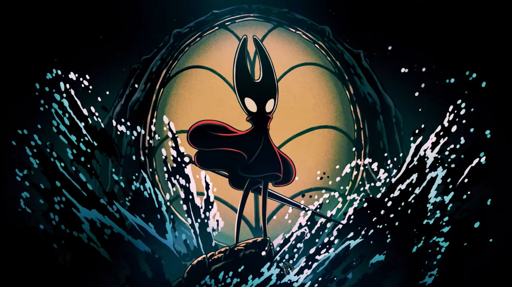

DLC Sea of Sorrow
Sea of Sorrow es la primera expansión oficial de Hollow Knight: Silksong, anunciada por el estudio Team Cherry y prevista para lanzarse en 2026 como un DLC gratuito para todos los jugadores que posean el juego base. La expansión presenta una temática náutica, con contenido inspirado en el mar, la sal y los entornos costeros o subacuáticos, ampliando el mundo de Silksong y la historia de Hornet.
